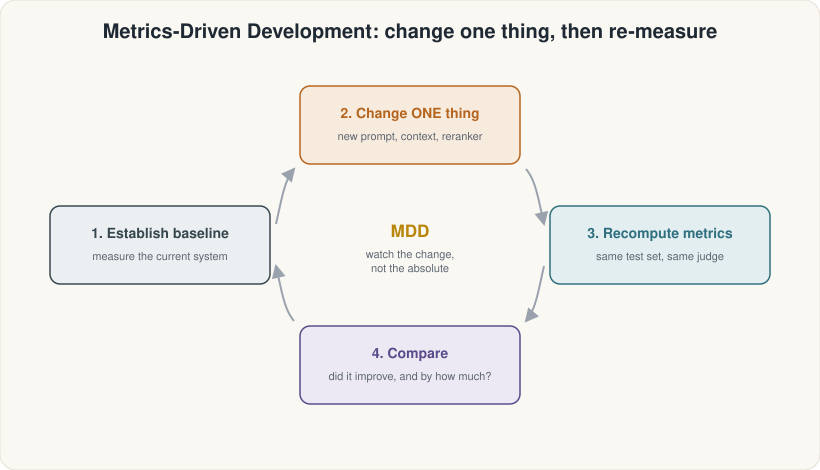

ASDRP · Agentic RAG Track · Module 06
Why Evaluate?
Instrument your RAG pipeline with the Metrics-Driven Development loop and build your first evaluation dataset.
What we'll cover
Contents
Evaluation mindset
- Why measure?
- Fixed test sets
- Absolute vs. relative scores
MDD loop + retriever / generator split
- Build → Measure → Diagnose → Improve
- One variable at a time
- Retriever metrics vs. generator metrics
RAGAS harness setup
- Import stub + nest_asyncio
- SingleTurnSample / EvaluationDataset
- generator_llm vs. judge_llm
Evaluation mindset
You can't improve what you don't measure
Tweak something, eyeball one answer, feel good. But the other seven questions might have gotten worse.
Fix test set + scoring procedure + discipline to run it before and after every change.
The wrong metric misleads. A high score on a weak test set proves only that your system is good at that test set.
Three ingredients of rigorous evaluation:
- Fixed test set —
golden_questions.json(8 Qs, diverse, single- & multi-hop) - Consistent scoring — RAGAS metrics, same LLM judge every run
- Discipline — run before and after every pipeline change
Metrics-Driven Development
The MDD loop

Metrics-Driven Development
One variable at a time
Make exactly one change to the pipeline.
Run all 8 golden questions through the same metrics.
Which questions improved? Did precision trade off against recall?
Hypothesise why it moved, form the next change, repeat.
When a metric becomes the target it stops being a reliable guide. With only 8 questions, a 0.02 score difference is noise — focus on large, consistent gaps. (Module 12 goes deeper.)
The two halves
Retriever vs. generator — where each metric looks

The two halves
Wrong answers come from two different places
The right passages never arrived — wrong chunks, too few, or noisy results.
Fix: better chunking, more k, reranking.
Retriever metrics: context precision, context recall, context entities recall, noise sensitivity
Good passages arrived but the model hallucinated, was unfaithful, or produced an irrelevant answer.
Fix: stronger model, better prompt, lower temperature.
Generator metrics: faithfulness, response relevancy, factual correctness
Always ask first: is this a retrieval problem or a generation problem? The fix is completely different.
RAGAS harness setup
Step 1 — Import stub + nest_asyncio
import sys, types
# RAGAS 0.4.3 tries to import a langchain_community
# module that has been removed. Stub it before importing ragas.
_vx = types.ModuleType(
"langchain_community.chat_models.vertexai")
class ChatVertexAI: # placeholder — intentionally non-functional
pass
_vx.ChatVertexAI = ChatVertexAI
sys.modules[
"langchain_community.chat_models.vertexai"] = _vx
# Notebooks already run an event loop; RAGAS uses asyncio.
import nest_asyncio
nest_asyncio.apply()
# Now it is safe to import ragas.
from ragas.dataset_schema import (
SingleTurnSample, EvaluationDataset)RAGAS 0.4.3 has a hard import for a VertexAI module that LangChain Community removed. Stubbing it lets the litellm path work without errors.
Jupyter runs an event loop. RAGAS also uses
asyncio. Without this patch, nested await calls crash.
RAGAS harness setup
Step 3 — RAGAS model objects
import os, litellm
from ragas.llms import llm_factory
from ragas.embeddings.base import embedding_factory
LLM_MODEL = "ollama_chat/nemotron-3-super:cloud" # writes answers
JUDGE_MODEL = "ollama_chat/gemma4:31b-cloud" # grades answers
EMBEDDING_MODEL = "ollama/qwen3-embedding:0.6b"
generator_llm = llm_factory(LLM_MODEL, provider="litellm",
client=litellm.completion, temperature=0.3)
judge_llm = llm_factory(JUDGE_MODEL, provider="litellm",
client=litellm.completion, temperature=0.0)
ragas_embeddings = embedding_factory(
"litellm", model=EMBEDDING_MODEL,
api_base=os.environ["OLLAMA_API_BASE"])Using the same model to both write and grade answers creates a sycophancy loop — it will give high scores to answers it would produce itself. Always keep
generator_llm and judge_llm separate.
RAGAS harness setup
Step 4 — SingleTurnSample & EvaluationDataset
import json
from ragas.dataset_schema import (
SingleTurnSample, EvaluationDataset)
golden = json.loads(open("golden_questions.json").read())
samples = []
for g in golden:
out = rag_answer(g["question"])
samples.append(SingleTurnSample(
user_input = g["question"],
retrieved_contexts = out["retrieved_contexts"],
response = out["response"],
reference = g["reference"],
))
eval_dataset = EvaluationDataset(samples=samples)
print(f"Dataset: {len(eval_dataset.samples)} rows")Each SingleTurnSample holds:
user_input— the questionretrieved_contexts— passages returned by the retrieverresponse— the generator's answerreference— the ground-truth answer
EvaluationDataset ready for Module 07 scoring.
RAGAS harness setup
No key? Use the frozen fallback
import os, json
from dotenv import load_dotenv, find_dotenv
load_dotenv(find_dotenv()) # resolves to tutorials/.env
HAVE_KEYS = bool(os.environ.get("OLLAMA_API_KEY"))
if HAVE_KEYS:
# ... build the real RAG and call rag_answer() ...
eval_dataset = EvaluationDataset(samples=live_samples)
else:
raw = json.load(open("frozen/sample_dataset.json"))
eval_dataset = EvaluationDataset(samples=[
SingleTurnSample(**s) for s in raw["samples"]
])
print("(using illustrative frozen data — set OLLAMA_API_KEY "
"in tutorials/.env to run live)")frozen/sample_dataset.json ships 2 illustrative rows so you can follow every downstream cell without spending any API credits.
Module 06 · Summary
What you built
Evaluation mindset
- Fixed test set (8 golden Qs)
- Consistent scoring procedure
- Focus on relative changes, not absolute scores
MDD loop + two halves
- Build → Measure → Diagnose → Improve
- One change at a time
- Retriever metrics vs. generator metrics
RAGAS harness
- Import stub + nest_asyncio
- generator_llm ≠ judge_llm
- EvaluationDataset (8 samples, frozen fallback)
Run the notebook: 06_why_evaluate.ipynb · Next: Module 07 scores the first retriever metrics on this dataset.